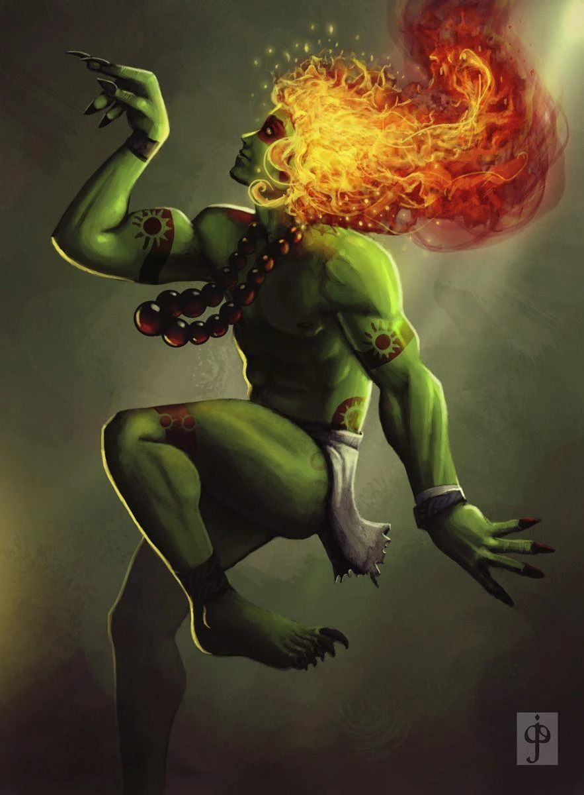
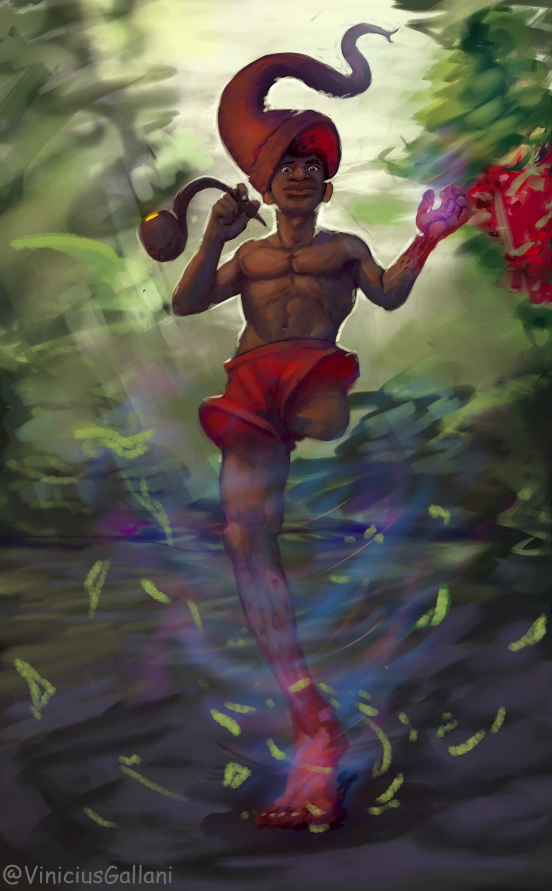

Espírito da Floresta
CURUPIRA
Folclore Brasileiro · Terror Low Poly
Nas profundezas da Mata Atlântica, onde os pés andam ao contrário e as fogueiras jamais se apagam, algo ancestral o observa. Sobreviva à noite. Não quebre as regras da floresta.
Sobre o Projeto
CURUPIRA é um jogo de terror em perspectiva low poly desenvolvido como Trabalho de Conclusão de Curso. Baseado na mitologia do folclore brasileiro, o jogador enfrenta o espírito guardião das florestas — uma entidade de pés invertidos que protege a natureza com fúria ancestral.
Explore ambientes procedurais, resolva enigmas baseados em rituais indígenas e tente sobreviver a uma criatura que conhece cada palmo da mata melhor que você.
3
Capítulos de Terror
7+
Criaturas do Folclore
Low
Poly
Estética Visual Única
PT
100% em Português

Espírito da Floresta
CURUPIRA

Travesso · Perigoso
SACI-PERERÊ

Cobra de Fogo
BOITATÁ
Encantadora dos Rios
IARA
"Aquele que derruba a árvore sagrada, aquele que caça sem necessidade — o Curupira rastreia seus passos, inverte sua direção e o perde para sempre nas entranhas da mata."
— Lenda Tupi-Guarani